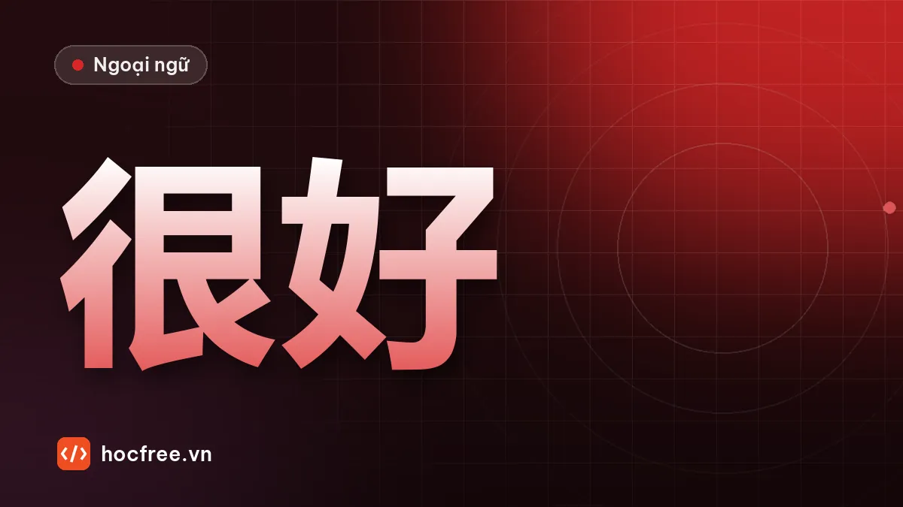

Câu có vị ngữ tính từ: vì sao phải có 很, cách dùng 太…了
Tiếng Trung không dùng 是 trước tính từ: vai trò của 很, các phó từ mức độ 非常, 太…了, 不太, 有点儿 và cách miêu tả người, đồ vật.

Học xong bài này, bạn sẽ
- Dùng câu vị ngữ tính từ không có 是
- Chọn đúng phó từ mức độ
- Miêu tả người, đồ vật, công việc
Nên học trước: Từ để hỏi: 什么, 谁, 哪儿, 怎么, 为什么
Nội dung bài viết
"Công việc bận", "Hà Nội đẹp", "Trà này ngon". Tiếng Việt nói thẳng chủ ngữ + tính từ. Tiếng Trung cũng vậy, nhưng có một chi tiết khiến người mới học hay sai: gần như luôn phải có 很, và không bao giờ có 是. Bài này giải thích lý do và dạy cách điều chỉnh mức độ.
Từ vựng
| Chữ Hán | Pinyin | Nghĩa | Ví dụ |
|---|---|---|---|
| 很 | hěn | rất (thường chỉ để nối) | 我很忙。 |
| 非常 | fēicháng | vô cùng, rất | 今天非常热。 |
| 太…了 | tài…le | quá… | 太贵了！ |
| 不太 | bú tài | không… lắm | 不太忙。 |
| 有点儿 | yǒudiǎnr | hơi (không vừa ý) | 有点儿累。 |
| 大 | dà | to, lớn | 你们公司很大。 |
| 小 | xiǎo | nhỏ | 我的房间很小。 |
| 多 | duō | nhiều | 人很多。 |
| 少 | shǎo | ít | 钱很少。 |
| 热 | rè | nóng | 胡志明市很热。 |
| 冷 | lěng | lạnh | 北京冬天很冷。 |
| 漂亮 | piàoliang | đẹp | 她很漂亮。 |
| 好吃 | hǎochī | ngon (đồ ăn) | 越南菜很好吃。 |
| 好喝 | hǎohē | ngon (đồ uống) | 这个茶很好喝。 |
| 贵 | guì | đắt | 太贵了！ |
| 便宜 | piányi | rẻ | 这儿的水果很便宜。 |
| 高 | gāo | cao | 他很高。 |
| 新 / 旧 | xīn / jiù | mới / cũ | 我的手机很旧。 |
| 房间 | fángjiān | phòng | 这个房间很大。 |
| 菜 | cài | món ăn | 中国菜 |
Phát âm
- 很 + thanh 3 → đọc thanh 2: 很好 hén hǎo, 很小 hén xiǎo, 很冷 hén lěng.
- 太 tài thanh 4 rơi mạnh, 了 le nhẹ: tài guì le! Nói câu này với cảm xúc, giọng lên ở 太.
- 便宜 piányi: chữ 便 ở đây đọc pián (đa âm, trong 方便 đọc biàn).
Ngữ pháp
1. Chủ ngữ + 很 + tính từ (không có 是)
Trong tiếng Trung, tính từ tự làm vị ngữ, không cần động từ "là":
- ✔ 我很忙。 ✘ 我是忙。 ✘ 我是很忙。
- ✔ 越南菜很好吃。
Vì sao phải có 很? Câu khẳng định chỉ có tính từ trơn (我忙) nghe như đang so sánh hoặc chưa nói xong: "Tôi bận (còn anh ấy thì không)". Để nói một câu trọn vẹn, người Trung thêm 很. Lúc này 很 không nhấn mạnh, nghĩa "rất" rất nhẹ. Muốn nhấn mạnh "rất" thật sự thì đọc to 很, hoặc dùng 非常.
2. Bảng phó từ mức độ
| Mức độ | Mẫu | Ví dụ |
|---|---|---|
| Rất cao | 非常 + adj | 非常好 (vô cùng tốt) |
| Quá (thường cảm thán) | 太 + adj + 了 | 太好了！ (Tuyệt quá!) 太贵了！ (Đắt quá!) |
| Bình thường | 很 + adj | 很好 |
| Hơi (không vừa ý) | 有点儿 + adj | 有点儿贵 (hơi đắt) |
| Không lắm | 不太 + adj | 不太贵 (không đắt lắm) |
| Phủ định | 不 + adj | 不贵 (không đắt) |
3. Phủ định và câu hỏi
- Phủ định: bỏ 很, thêm 不: 我不忙。 Hoặc giảm nhẹ: 不太忙。
- Câu hỏi: 你忙吗？ (không dùng 很 trong câu hỏi 吗). Hoặc câu chính phản: 你忙不忙？
4. Tính từ làm định ngữ (bổ nghĩa danh từ)
Ngược tiếng Việt, tính từ đứng trước danh từ: 新手机 (điện thoại mới), 大公司 (công ty lớn). Tính từ hai âm tiết hoặc có 很 thì thêm 的: 漂亮的衣服 (quần áo đẹp), 很大的房间 (căn phòng rất lớn).
Ví dụ thực tế
- 这个工作不太累，可是有点儿忙。 Zhège gōngzuò bú tài lèi, kěshì yǒudiǎnr máng. Công việc này không mệt lắm, nhưng hơi bận. (可是: nhưng)
- 这家饭馆的菜非常好吃。 Zhè jiā fànguǎn de cài fēicháng hǎochī. Món ăn của quán này cực ngon.
Hội thoại: hỏi về thành phố
A: 你住在哪儿？
Nǐ zhù zài nǎr?
Bạn sống ở đâu?
B: 我住在河内。
Wǒ zhù zài Hénèi.
Mình sống ở Hà Nội.
A: 河内怎么样？
Hénèi zěnmeyàng?
Hà Nội thế nào?
B: 很漂亮，菜也很好吃。可是人太多了！
Hěn piàoliang, cài yě hěn hǎochī. Kěshì rén tài duō le!
Rất đẹp, đồ ăn cũng ngon. Nhưng người đông quá!
A: 夏天热不热？
Xiàtiān rè bu rè?
Mùa hè có nóng không?
B: 非常热！冬天有点儿冷。
Fēicháng rè! Dōngtiān yǒudiǎnr lěng.
Cực nóng! Mùa đông thì hơi lạnh.
Từ mới: 可是 kěshì (nhưng), 夏天 xiàtiān (mùa hè), 冬天 dōngtiān (mùa đông). 热不热 là câu hỏi chính phản: khẳng định + phủ định, không cần 吗.
Luyện tập
Bài 1. Sửa câu sai (có câu đúng): (1) 我是很忙。 (2) 他很高。 (3) 这个手机是贵。 (4) 你很忙吗？ (5) 她有点儿漂亮。 (6) 今天太热。 (7) 我不很累。 (8) 新的手机。
Bài 2. Dịch: (1) Cà phê này hơi đắt. (2) Công ty chúng tôi không lớn lắm. (3) Rẻ quá! (4) Bạn có mệt không?
Xem đáp án
Bài 1. (1) 我很忙。 (2) Đúng. (3) 这个手机很贵。 (4) 你忙吗？ (5) 她很漂亮。 (6) 今天太热了。 (7) 我不累。/ 我不太累。 (8) 新手机 (tính từ đơn một âm tiết thường không cần 的).
Bài 2. (1) 这个咖啡有点儿贵。 (2) 我们公司不太大。 (3) 太便宜了！ (4) 你累吗？/ 你累不累？
Kiểm tra cuối bài
1. Vì sao câu 我是忙 sai?
2. 有点儿 dùng cho điều gì?
3. Câu "Tuyệt quá!" nói thế nào?
Xem đáp án
- Tính từ tự làm vị ngữ, không dùng 是 trước tính từ.
- Điều không vừa ý, tiêu cực.
- 太好了！
Tổng kết và ôn tập
- Chủ ngữ + 很 + tính từ; không có 是.
- 非常 / 太…了 / 很 / 有点儿 / 不太 / 不: chọn theo mức độ và thái độ.
- Câu hỏi 吗 và phủ định 不 đều bỏ 很.
Bài ôn: viết 6 câu miêu tả công ty, đồng nghiệp, thành phố của bạn, mỗi câu một phó từ khác nhau. Bài tiếp theo: nơi chốn với 在 và phương vị từ.
Bài tập thực hành
- Sửa 8 câu sai trong phần luyện tập, giải thích lỗi bằng một câu tiếng Việt.
- Viết 6 câu miêu tả công ty, đồng nghiệp hoặc thành phố của bạn.
Làm xong bài tập mới chuyển sang bài tiếp theo: đọc to, tự viết chữ Hán và tự chấm đáp án là cách duy nhất để nhớ lâu.